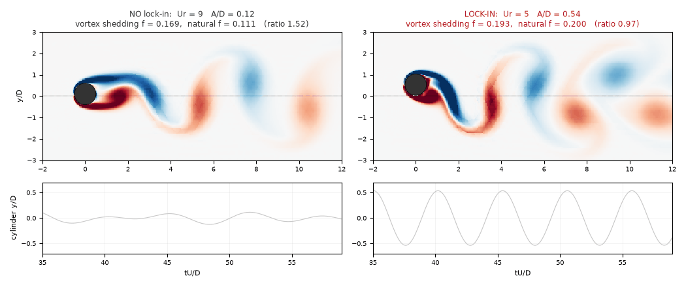

可编程非线性超材料
2024/3 – 2025/9 · Nonlinear Dynamics
带谐振器的梁在大振幅下会表现出立方非线性，共振峰会向一侧倾斜，出现跳跃现象。
- 建立带局部谐振器结构的降阶模型，用两个量描述整体响应：等效线性频率和等效立方刚度。
- 改变谐振器沿梁的分布和参数，这两个等效量随之改变，结构的非线性响应因此可以调节。
我 2019 年本科毕业于郑州大学，专业是工程力学。2022 年在 Stevens Institute of Technology（SIT）获得机械工程硕士学位，方向是机器人。现在在 SIT 攻读机械工程博士，研究非线性动力学与振动，预计 2026 年 12 月毕业。博士期间我主要从事结构振动相关的研究：从一个振动现象出发，分析机理，建立模型，通过参数分析和优化给出设计方案，再用数值结果验证。2025 年夏天在富士康工业互联网实习时，我把同样的做法用在了工装结构校核、设备状态监测和产线视觉检测上。
按住拖动，松手后会带着惯性滑行。
photos/life1.jpgphotos/life2.jpgphotos/life3.jpgphotos/life4.jpgphotos/life5.jpg局部共振超材料是在主结构上周期性地附加小质量和弹簧。它们在特定频段内吸收主结构的振动，形成带隙。我的博士工作围绕这类结构在非线性情况下的行为和设计方法展开。
带谐振器的梁在大振幅下会表现出立方非线性，共振峰会向一侧倾斜，出现跳跃现象。
工程上的问题通常是反过来的：先知道想要什么响应，再问结构该怎么布置。
水流经过圆柱时交替脱落旋涡，圆柱被带着振动。只有流速落在锁定区间内，振幅才大，才采得到能量。

流固耦合仿真：未锁定（左）与锁定（右）的涡脱落和圆柱位移一组本应相同的叶片之间只有很弱的耦合时，振动能量可能集中到其中一片上，这一片的振幅远大于其他叶片。
带隙理论针对无限长周期结构。真实结构是有限长的，截断之后，带隙内部会多出一个只在端部振动的模态，即边缘模态。
我的研究里反复出现的四个参数。拖动左边的质量块再松手，或者调下面的滑块，看自由振动和幅频曲线怎么变。
k₃ 为正时共振峰向右倾斜（硬化），为负时向左倾斜（软化）；峰倾斜到一定程度，同一个频率对应多个振幅，这就是跳跃现象的来源。外力是简谐力 F·cos(Ωt)，左图中的激励频率取线性固有频率（右图竖线处）；F 调到 0 就是自由振动。模型为单自由度 Duffing 振子，仅作演示。
2025 年 5 月至 8 月，富士康工业互联网（Fii），美国威斯康星州，自动化工程实习生。
支持 AGV 团队设计物料装载架，做基于有限元的结构验证：应力应变校核，以及基于 S–N 曲线的疲劳寿命评估，确认循环载荷下的耐久性。
主导服务器制造与验证的执行工作，负责散热器集成、主板装配，以及 PCM/TIM 热界面材料的点胶与贴合。
基于振动与噪声机理开发 LSTM 设备异常检测流程，用振动信号做设备健康监测和异常模式识别。
参与减振安装结构的可调阻尼动力学建模与方案论证，评估多频激励环境下的振动控制效果。
参与系统建模与动力学仿真分析，开展系统稳定性与抗扰动能力评估。
方向：非线性动力学与振动。获 Provost Doctoral Fellowship（2022–2023）和 Excellence Doctoral Fellowship（2026–2027）。
美国威斯康星州。工装结构校核、服务器产线工艺执行、设备异常检测、视觉检测。
毕业设计、建模与仿真（研究生与本科生）、复合材料、控制系统、工程热动力学。协助授课与实验教学，指导毕业设计团队和课程项目。
方向：机器人。
河南郑州。